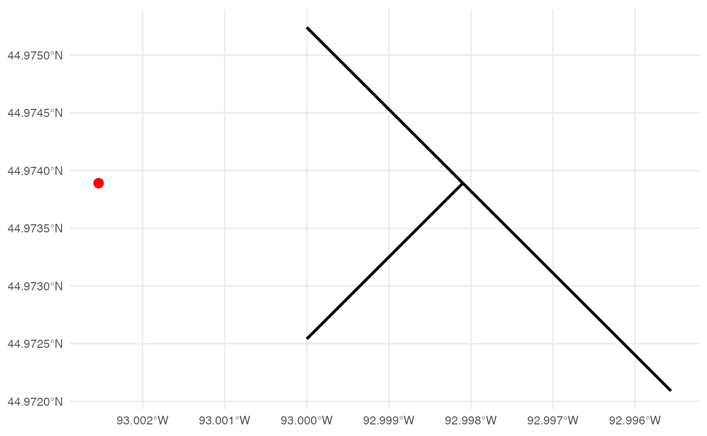
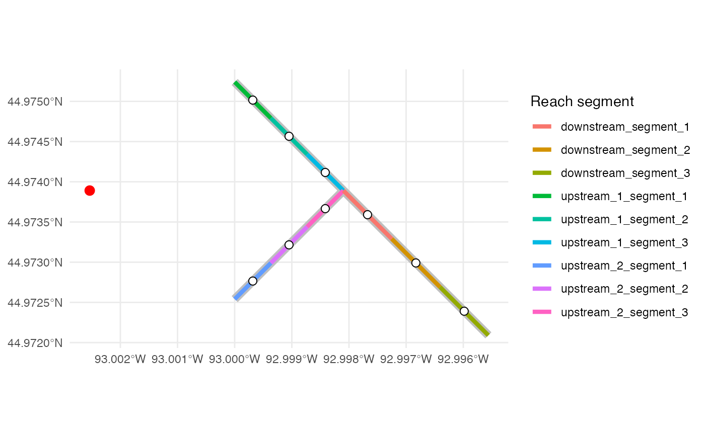
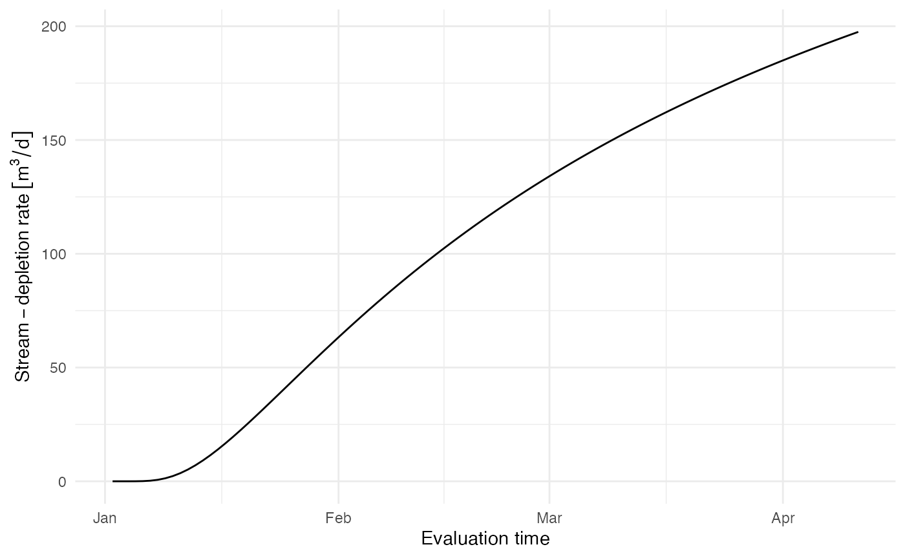
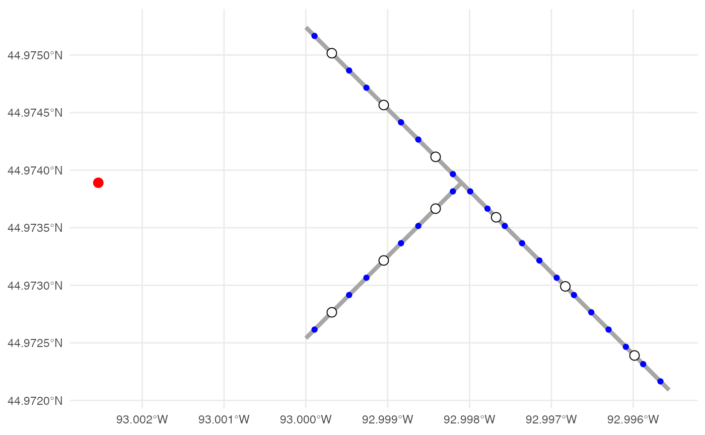
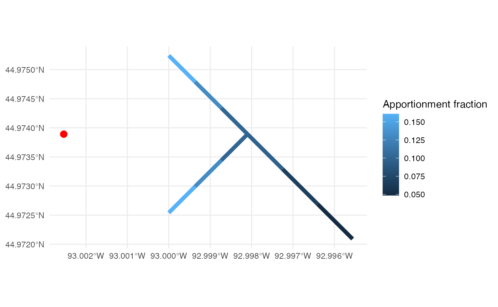
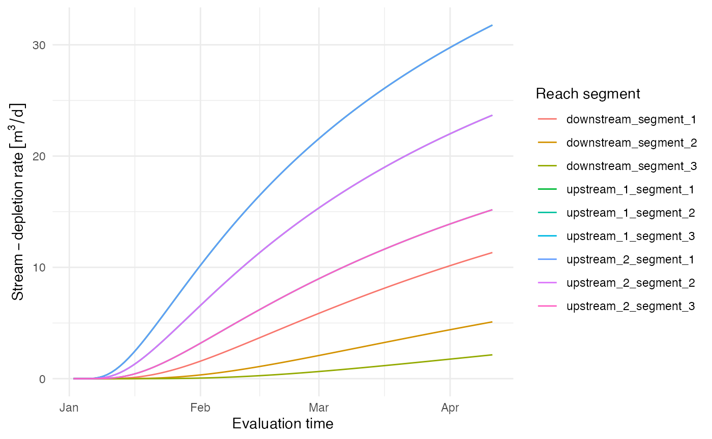
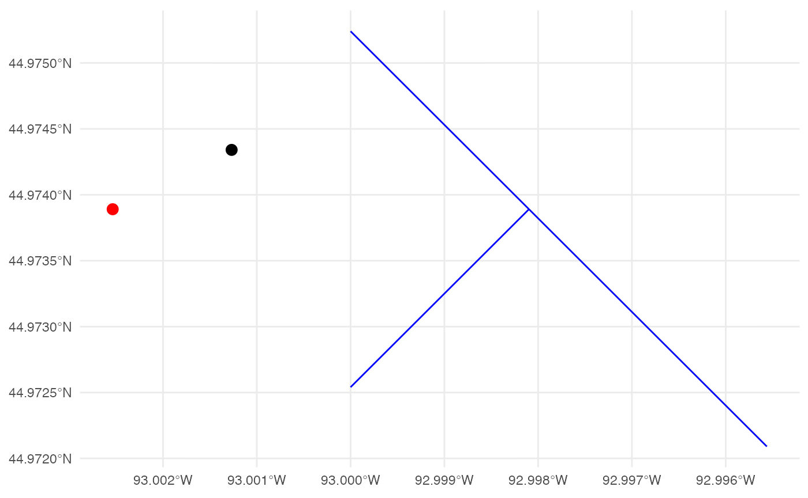
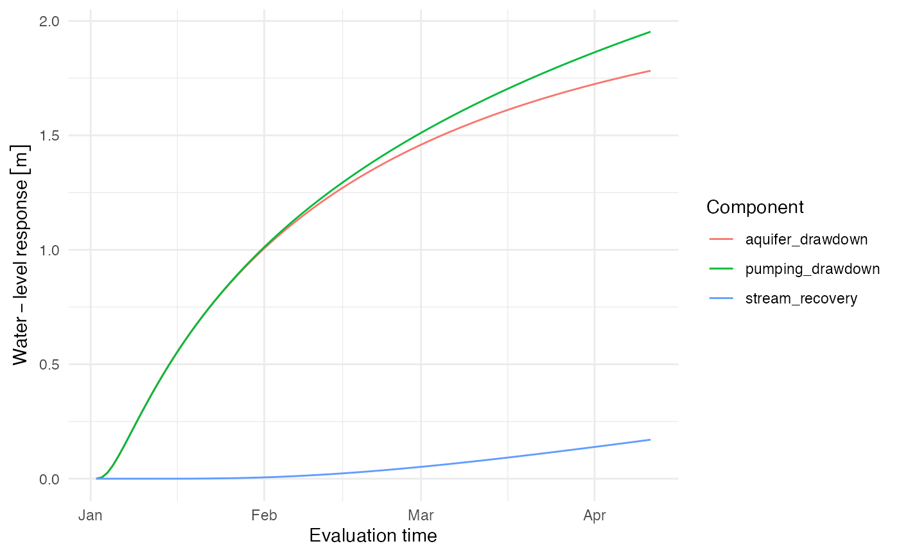

stream-depletion-apportionment.Rmd
library(isw)
#> Loading required package: expint
#> Loading required package: units
#> udunits database from /Library/Frameworks/R.framework/Versions/4.6/Resources/library/units/share/udunits/udunits2.xml
library(units)
library(tibble)
library(dplyr)
#>
#> Attaching package: 'dplyr'
#> The following objects are masked from 'package:stats':
#>
#> filter, lag
#> The following objects are masked from 'package:base':
#>
#> intersect, setdiff, setequal, union
library(ggplot2)
library(sf)
#> Linking to GEOS 3.13.0, GDAL 3.8.5, PROJ 9.5.1; sf_use_s2() is TRUEThis vignette develops a stream-depletion apportionment example from the package’s spatial and pumping-schedule inputs. We begin with the inputs and functions that are currently available. At this stage, depletion is calculated using the distance to the closest stream reach. Later sections will distribute that depletion among the discretized stream reaches.
pumping_wells is an sf point object. Each
pumping well has a unique pump_id and the aquifer
properties associated with that well. Aquifer properties retain their
physical units.
pumping_wells <- st_as_sf(
tibble(
pump_id = "pump_1",
x = 499800,
y = 4980050,
K = set_units(1e-5, "m/s"),
D = set_units(50, "m"),
V = 0.1
),
coords = c("x", "y"),
crs = 32615
)
pumping_wells
#> Simple feature collection with 1 feature and 4 fields
#> Geometry type: POINT
#> Dimension: XY
#> Bounding box: xmin: 499800 ymin: 4980050 xmax: 499800 ymax: 4980050
#> Projected CRS: WGS 84 / UTM zone 15N
#> # A tibble: 1 × 5
#> pump_id K D V geometry
#> * <chr> [m/s] [m] <dbl> <POINT [m]>
#> 1 pump_1 0.00001 50 0.1 (499800 4980050)pumping_schedules uses wide format. Its first column
contains the schedule times, and every remaining column is named using a
pump_id from pumping_wells. The pumping rate
begins at its corresponding schedule time.
This first example uses one constant pumping event of 500 cubic meters per day. We evaluate its response at the end of each of the following 100 days.
pumping_schedules <- tibble(
t = as.Date("2025-01-01"),
pump_1 = set_units(500, "m^3/day")
)
evaluation_times <- seq.Date(
from = pumping_schedules$t + 1,
by = "day",
length.out = 100
)
pumping_schedules
#> # A tibble: 1 × 2
#> t pump_1
#> <date> [m^3/d]
#> 1 2025-01-01 500
head(evaluation_times)
#> [1] "2025-01-02" "2025-01-03" "2025-01-04" "2025-01-05" "2025-01-06"
#> [6] "2025-01-07"stream_reaches is an sf line object with
one row and one unique reach_id for each input stream
reach. Here, two upstream reaches meet at a confluence and flow into a
downstream reach.
stream_reaches <- st_sf(
reach_id = c("upstream_1", "upstream_2", "downstream"),
geometry = st_sfc(
st_linestring(
matrix(c(500000, 4980200, 500150, 4980050), ncol = 2, byrow = TRUE)
),
st_linestring(
matrix(c(500000, 4979900, 500150, 4980050), ncol = 2, byrow = TRUE)
),
st_linestring(
matrix(c(500150, 4980050, 500350, 4979850), ncol = 2, byrow = TRUE)
),
crs = 32615
)
)
ggplot() +
geom_sf(data = stream_reaches, linewidth = 1) +
geom_sf(data = pumping_wells, color = "red", size = 3) +
theme_minimal()
The spatial inputs can be supplied in any defined coordinate
reference system. For distance-based calculations, they are transformed
to one projected analysis CRS. Because well_diam was not
supplied, the prepared pumping-well object assigns it a default value of
zero meters.
The spatial-preparation function is currently internal. It will eventually be called by the public stream-depletion interface.
spatial_inputs <- isw:::.prepare_spatial_inputs(
pumping_wells,
stream_reaches
)
spatial_inputs$analysis_crs$Name
#> [1] "WGS 84 / UTM zone 15N"
spatial_inputs$pumping_wells$well_diam
#> 0 [m]Each input reach is divided into reach segments that do not exceed
the requested spacing. The active geometry remains a line segment, while
model_point contains the point at the center of each reach
segment. represented_length records the actual stream
length represented by that point.
reach_segments <- isw:::.discretize_stream_reaches(
spatial_inputs$stream_reaches,
reach_spacing = set_units(100, "m")
)
reach_segments[c(
"reach_id",
"reach_segment_id",
"represented_length"
)]
#> Simple feature collection with 9 features and 3 fields
#> Geometry type: LINESTRING
#> Dimension: XY
#> Bounding box: xmin: 5e+05 ymin: 4979850 xmax: 500350 ymax: 4980200
#> Projected CRS: WGS 84 / UTM zone 15N
#> reach_id reach_segment_id represented_length
#> 1 upstream_1 upstream_1_segment_1 70.71068 [m]
#> 2 upstream_1 upstream_1_segment_2 70.71068 [m]
#> 3 upstream_1 upstream_1_segment_3 70.71068 [m]
#> 4 upstream_2 upstream_2_segment_1 70.71068 [m]
#> 5 upstream_2 upstream_2_segment_2 70.71068 [m]
#> 6 upstream_2 upstream_2_segment_3 70.71068 [m]
#> 7 downstream downstream_segment_1 94.28090 [m]
#> 8 downstream downstream_segment_2 94.28090 [m]
#> 9 downstream downstream_segment_3 94.28090 [m]
#> geometry
#> 1 LINESTRING (5e+05 4980200, ...
#> 2 LINESTRING (500050 4980150,...
#> 3 LINESTRING (500100 4980100,...
#> 4 LINESTRING (5e+05 4979900, ...
#> 5 LINESTRING (500050 4979950,...
#> 6 LINESTRING (500100 4980000,...
#> 7 LINESTRING (500150 4980050,...
#> 8 LINESTRING (500216.7 497998...
#> 9 LINESTRING (500283.3 497991...
ggplot() +
geom_sf(
data = spatial_inputs$stream_reaches,
color = "grey75",
linewidth = 3
) +
geom_sf(
data = reach_segments,
aes(color = reach_segment_id),
linewidth = 1.5
) +
geom_sf(
data = reach_segments,
aes(geometry = model_point),
color = "black",
fill = "white",
shape = 21,
size = 2.5
) +
geom_sf(
data = spatial_inputs$pumping_wells,
color = "red",
size = 3
) +
labs(color = "Reach segment") +
theme_minimal()
The pumping schedule is converted into changes in pumping rate. Each
nonzero change is then paired with the evaluation times at which it can
affect stream depletion. elapsed_time is the time passed to
the analytical response function.
pumping_response_times <- isw:::.get_pumping_response_times(
pumping_schedules,
spatial_inputs$pumping_wells,
evaluation_times
)
pumping_response_times
#> # A tibble: 100 × 5
#> pump_id evaluation_time pumping_time elapsed_time pumping_rate_change
#> <chr> <date> [d] [d] [m^3/d]
#> 1 pump_1 2025-01-02 0 1 500
#> 2 pump_1 2025-01-03 0 2 500
#> 3 pump_1 2025-01-04 0 3 500
#> 4 pump_1 2025-01-05 0 4 500
#> 5 pump_1 2025-01-06 0 5 500
#> 6 pump_1 2025-01-07 0 6 500
#> 7 pump_1 2025-01-08 0 7 500
#> 8 pump_1 2025-01-09 0 8 500
#> 9 pump_1 2025-01-10 0 9 500
#> 10 pump_1 2025-01-11 0 10 500
#> # ℹ 90 more rowsBefore adding apportionment, we can reproduce the conventional analytical calculation by treating the closest reach as the single infinite stream. The distance is calculated from the pumping well to the original stream geometry.
pump_to_reach_distances <- st_distance(
spatial_inputs$pumping_wells,
spatial_inputs$stream_reaches
)
distance_to_stream <- min(pump_to_reach_distances)
distance_to_stream
#> 250 [m]The aquifer properties are joined to the pumping-event table using
pump_id. The descriptive distance_to_stream
variable is passed to the existing Glover kernel as its x1
argument.
df <- pumping_response_times |>
left_join(
st_drop_geometry(spatial_inputs$pumping_wells),
by = "pump_id"
) |>
mutate(
distance_to_stream = distance_to_stream,
stream_depletion_fraction = get_stream_depletion_fraction(
x1 = distance_to_stream,
K = K,
D = D,
V = V,
t = elapsed_time
),
stream_depletion_rate =
stream_depletion_fraction * pumping_rate_change
)
df |>
select(
pump_id,
evaluation_time,
elapsed_time,
distance_to_stream,
stream_depletion_fraction,
stream_depletion_rate
)
#> # A tibble: 100 × 6
#> pump_id evaluation_time elapsed_time distance_to_stream
#> <chr> <date> [d] [m]
#> 1 pump_1 2025-01-02 1 250
#> 2 pump_1 2025-01-03 2 250
#> 3 pump_1 2025-01-04 3 250
#> 4 pump_1 2025-01-05 4 250
#> 5 pump_1 2025-01-06 5 250
#> 6 pump_1 2025-01-07 6 250
#> 7 pump_1 2025-01-08 7 250
#> 8 pump_1 2025-01-09 8 250
#> 9 pump_1 2025-01-10 9 250
#> 10 pump_1 2025-01-11 10 250
#> # ℹ 90 more rows
#> # ℹ 2 more variables: stream_depletion_fraction <dbl>,
#> # stream_depletion_rate [m^3/d]
ggplot(df, aes(evaluation_time, stream_depletion_rate)) +
geom_line() +
labs(
x = "Evaluation time",
y = "Stream-depletion rate"
) +
theme_minimal()
This calculation uses only the closest stream distance and does not distribute depletion among the reach segments. We will retain it as a baseline for comparison with the apportioned results.
Web apportionment represents the geometry of each reach segment with
multiple points. sample_spacing controls this numerical
resolution independently of the reach_spacing used to
define the modeled reach segments.
sample_points <- sample_reach_segments(
reach_segments,
sample_spacing = set_units(25, "m")
)
sample_points[c(
"reach_id",
"reach_segment_id",
"sample_point_id",
"sampled_length"
)]
#> Simple feature collection with 30 features and 4 fields
#> Geometry type: POINT
#> Dimension: XY
#> Bounding box: xmin: 500008.3 ymin: 4979858 xmax: 500341.7 ymax: 4980192
#> Projected CRS: WGS 84 / UTM zone 15N
#> First 10 features:
#> reach_id reach_segment_id sample_point_id sampled_length
#> 1 upstream_1 upstream_1_segment_1 upstream_1_segment_1_point_1 23.57023 [m]
#> 2 upstream_1 upstream_1_segment_1 upstream_1_segment_1_point_2 23.57023 [m]
#> 3 upstream_1 upstream_1_segment_1 upstream_1_segment_1_point_3 23.57023 [m]
#> 4 upstream_1 upstream_1_segment_2 upstream_1_segment_2_point_1 23.57023 [m]
#> 5 upstream_1 upstream_1_segment_2 upstream_1_segment_2_point_2 23.57023 [m]
#> 6 upstream_1 upstream_1_segment_2 upstream_1_segment_2_point_3 23.57023 [m]
#> 7 upstream_1 upstream_1_segment_3 upstream_1_segment_3_point_1 23.57023 [m]
#> 8 upstream_1 upstream_1_segment_3 upstream_1_segment_3_point_2 23.57023 [m]
#> 9 upstream_1 upstream_1_segment_3 upstream_1_segment_3_point_3 23.57023 [m]
#> 10 upstream_2 upstream_2_segment_1 upstream_2_segment_1_point_1 23.57023 [m]
#> geometry
#> 1 POINT (500008.3 4980192)
#> 2 POINT (500025 4980175)
#> 3 POINT (500041.7 4980158)
#> 4 POINT (500058.3 4980142)
#> 5 POINT (500075 4980125)
#> 6 POINT (500091.7 4980108)
#> 7 POINT (500108.3 4980092)
#> 8 POINT (500125 4980075)
#> 9 POINT (500141.7 4980058)
#> 10 POINT (500008.3 4979908)
ggplot() +
geom_sf(data = reach_segments, color = "grey65", linewidth = 1.5) +
geom_sf(data = sample_points, color = "blue", size = 1.5) +
geom_sf(
data = reach_segments,
aes(geometry = model_point),
color = "black",
fill = "white",
shape = 21,
size = 3
) +
geom_sf(
data = spatial_inputs$pumping_wells,
color = "red",
size = 3
) +
theme_minimal()
The blue points are used to resolve geometry during apportionment. The larger white points are the single model locations associated with each reach segment.
The web-squared method weights each sample point using its
represented stream length and inverse squared distance from the pumping
well. Point weights are summed by reach_segment_id and
normalized separately for every pump.
The same function also calculates
pump_to_reach_distance, the shortest distance from the pump
to each reach-segment line. This segment-specific distance is used by
the analytical stream-depletion function.
stream_apportionment <- get_stream_depletion_apportionment(
pumping_wells,
stream_reaches,
reach_spacing = set_units(100, "m"),
sample_spacing = set_units(25, "m"),
method = "web_squared"
)
stream_apportionment[c(
"pump_id",
"reach_id",
"reach_segment_id",
"pump_to_reach_distance",
"apportionment_fraction"
)]
#> Simple feature collection with 9 features and 5 fields
#> Geometry type: LINESTRING
#> Dimension: XY
#> Bounding box: xmin: 5e+05 ymin: 4979850 xmax: 500350 ymax: 4980200
#> Projected CRS: WGS 84 / UTM zone 15N
#> pump_id reach_id reach_segment_id pump_to_reach_distance
#> 1 pump_1 upstream_1 upstream_1_segment_1 250.0000 [m]
#> 2 pump_1 upstream_1 upstream_1_segment_2 269.2582 [m]
#> 3 pump_1 upstream_1 upstream_1_segment_3 304.1381 [m]
#> 4 pump_1 upstream_2 upstream_2_segment_1 250.0000 [m]
#> 5 pump_1 upstream_2 upstream_2_segment_2 269.2582 [m]
#> 6 pump_1 upstream_2 upstream_2_segment_3 304.1381 [m]
#> 7 pump_1 downstream downstream_segment_1 350.0000 [m]
#> 8 pump_1 downstream downstream_segment_2 421.9663 [m]
#> 9 pump_1 downstream downstream_segment_3 501.3870 [m]
#> apportionment_fraction geometry
#> 1 0.16085181 LINESTRING (5e+05 4980200, ...
#> 2 0.13165556 LINESTRING (500050 4980150,...
#> 3 0.10092931 LINESTRING (500100 4980100,...
#> 4 0.16085181 LINESTRING (5e+05 4979900, ...
#> 5 0.13165556 LINESTRING (500050 4979950,...
#> 6 0.10092931 LINESTRING (500100 4980000,...
#> 7 0.09694901 LINESTRING (500150 4980050,...
#> 8 0.06753111 LINESTRING (500216.7 497998...
#> 9 0.04864652 LINESTRING (500283.3 497991...The apportionment fractions must sum to one within each pumping well:
stream_apportionment |>
st_drop_geometry() |>
group_by(pump_id) |>
summarize(total_apportionment_fraction = sum(apportionment_fraction))
#> # A tibble: 1 × 2
#> pump_id total_apportionment_fraction
#> <chr> <dbl>
#> 1 pump_1 1
ggplot(stream_apportionment) +
geom_sf(aes(color = apportionment_fraction), linewidth = 2) +
geom_sf(
data = spatial_inputs$pumping_wells,
color = "red",
size = 3
) +
labs(color = "Apportionment fraction") +
theme_minimal()
We now apply the pumping schedule to every pump–reach-segment pair.
The analytical stream-depletion fraction is specific to
pump_id, reach_segment_id, and
elapsed_time. Internally, the function calculates a lookup
table of unique elapsed-time fractions so repeated response periods do
not repeat the analytical calculation.
Each pumping-rate change is multiplied by its time-dependent analytical fraction and the static apportionment fraction. Contributions from all earlier pumping events are then summed using superposition.
stream_depletion <- get_apportioned_stream_depletion(
pumping_wells,
pumping_schedules,
stream_apportionment,
evaluation_times
)
stream_depletion
#> # A tibble: 900 × 5
#> pump_id evaluation_time reach_id reach_segment_id stream_depletion_rate
#> <chr> <date> <chr> <chr> [m^3/d]
#> 1 pump_1 2025-01-02 upstream_1 upstream_1_segment_1 0
#> 2 pump_1 2025-01-02 upstream_1 upstream_1_segment_2 0
#> 3 pump_1 2025-01-02 upstream_1 upstream_1_segment_3 0
#> 4 pump_1 2025-01-02 upstream_2 upstream_2_segment_1 0
#> 5 pump_1 2025-01-02 upstream_2 upstream_2_segment_2 0
#> 6 pump_1 2025-01-02 upstream_2 upstream_2_segment_3 0
#> 7 pump_1 2025-01-02 downstream downstream_segment_1 0
#> 8 pump_1 2025-01-02 downstream downstream_segment_2 0
#> 9 pump_1 2025-01-02 downstream downstream_segment_3 0
#> 10 pump_1 2025-01-03 upstream_1 upstream_1_segment_1 0.000000146
#> # ℹ 890 more rowsThe returned data remain separated by pumping well and reach segment. This allows individual contributions to be inspected before combining them.
ggplot(
stream_depletion,
aes(
evaluation_time,
stream_depletion_rate,
color = reach_segment_id
)
) +
geom_line() +
labs(
x = "Evaluation time",
y = "Stream-depletion rate",
color = "Reach segment"
) +
theme_minimal()
Total modeled depletion across the stream network can be calculated by summing the reach-segment contributions:
total_stream_depletion <- stream_depletion |>
group_by(evaluation_time) |>
summarize(
stream_depletion_rate = sum(stream_depletion_rate),
.groups = "drop"
)
total_stream_depletion
#> # A tibble: 100 × 2
#> evaluation_time stream_depletion_rate
#> <date> [m^3/d]
#> 1 2025-01-02 0
#> 2 2025-01-03 0.000000303
#> 3 2025-01-04 0.000163
#> 4 2025-01-05 0.00403
#> 5 2025-01-06 0.0288
#> 6 2025-01-07 0.110
#> 7 2025-01-08 0.290
#> 8 2025-01-09 0.609
#> 9 2025-01-10 1.10
#> 10 2025-01-11 1.76
#> # ℹ 90 more rowsWe now add an observation well. Aquifer drawdown is calculated using
the direct distance from the pumping well to the observation well,
without an image well. Each reach segment’s model_point is
then treated as an injection well whose rate is derived from that
segment’s stream depletion.
observation_wells <- st_as_sf(
tibble(
observation_id = "obs_1",
x = 499900,
y = 4980100
),
coords = c("x", "y"),
crs = 32615
)
ggplot() +
geom_sf(data = stream_reaches, color = "blue") +
geom_sf(data = pumping_wells, color = "red", size = 3) +
geom_sf(data = observation_wells, color = "black", size = 3) +
theme_minimal()
The continuously changing stream-depletion rate is approximated over each pumping-schedule interval using the mean of its values at the beginning and end of the interval. The negative of that interval-average rate is applied as injection at the segment model point. Evaluation times control when drawdown is reported, not the internal injection timestep.
The injection schedule can be inspected before calculating drawdown.
stream_injection_schedule <- get_stream_injection_schedule(
pumping_wells,
pumping_schedules,
stream_apportionment,
evaluation_times
)
stream_injection_schedule
#> # A tibble: 900 × 6
#> pump_id reach_id reach_segment_id interval_start interval_end injection_rate
#> <chr> <chr> <chr> <date> <date> [m^3/d]
#> 1 pump_1 upstream… upstream_1_segm… 2025-01-01 2025-01-02 0
#> 2 pump_1 upstream… upstream_1_segm… 2025-01-02 2025-01-03 -0.0000000728
#> 3 pump_1 upstream… upstream_1_segm… 2025-01-03 2025-01-04 -0.0000366
#> 4 pump_1 upstream… upstream_1_segm… 2025-01-04 2025-01-05 -0.000886
#> 5 pump_1 upstream… upstream_1_segm… 2025-01-05 2025-01-06 -0.00658
#> 6 pump_1 upstream… upstream_1_segm… 2025-01-06 2025-01-07 -0.0265
#> 7 pump_1 upstream… upstream_1_segm… 2025-01-07 2025-01-08 -0.0733
#> 8 pump_1 upstream… upstream_1_segm… 2025-01-08 2025-01-09 -0.159
#> 9 pump_1 upstream… upstream_1_segm… 2025-01-09 2025-01-10 -0.290
#> 10 pump_1 upstream… upstream_1_segm… 2025-01-10 2025-01-11 -0.472
#> # ℹ 890 more rows
aquifer_drawdown <- get_apportioned_aquifer_drawdown(
pumping_wells,
pumping_schedules,
observation_wells,
stream_apportionment,
evaluation_times,
stream_injection_schedule = stream_injection_schedule
)
aquifer_drawdown
#> # A tibble: 100 × 6
#> pump_id observation_id evaluation_time pumping_drawdown stream_recovery
#> <chr> <chr> <date> [m] [m]
#> 1 pump_1 obs_1 2025-01-02 0.0000817 0
#> 2 pump_1 obs_1 2025-01-03 0.00556 4.62e-17
#> 3 pump_1 obs_1 2025-01-04 0.0258 6.40e-14
#> 4 pump_1 obs_1 2025-01-05 0.0589 2.15e-11
#> 5 pump_1 obs_1 2025-01-06 0.0998 7.13e-10
#> 6 pump_1 obs_1 2025-01-07 0.145 9.43e- 9
#> 7 pump_1 obs_1 2025-01-08 0.191 6.89e- 8
#> 8 pump_1 obs_1 2025-01-09 0.238 3.33e- 7
#> 9 pump_1 obs_1 2025-01-10 0.284 1.20e- 6
#> 10 pump_1 obs_1 2025-01-11 0.329 3.47e- 6
#> # ℹ 90 more rows
#> # ℹ 1 more variable: aquifer_drawdown [m]The output separates the decline caused by the physical pumping well
from the recovery caused by stream injection.
aquifer_drawdown is the pumping drawdown minus stream
recovery.
aquifer_drawdown |>
select(
evaluation_time,
pumping_drawdown,
stream_recovery,
aquifer_drawdown
) |>
tidyr::pivot_longer(
cols = -evaluation_time,
names_to = "component",
values_to = "water_level"
) |>
ggplot(aes(evaluation_time, water_level, color = component)) +
geom_line() +
labs(
x = "Evaluation time",
y = "Water-level response",
color = "Component"
) +
theme_minimal()